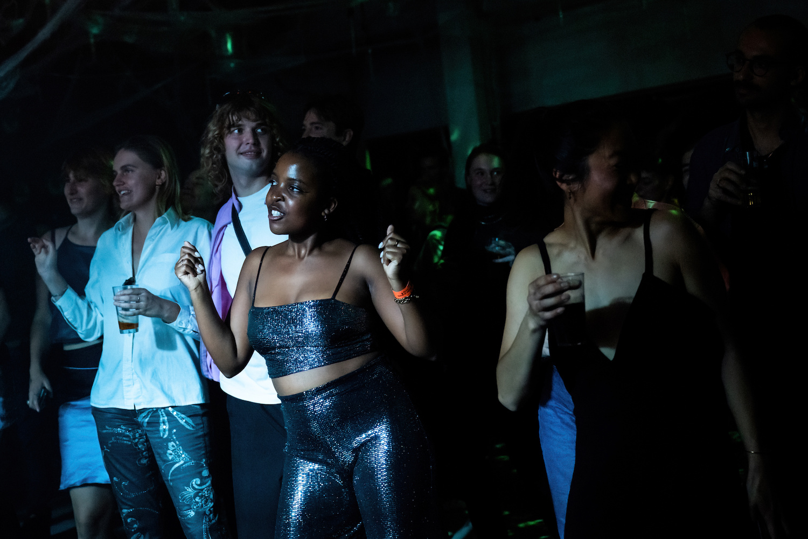
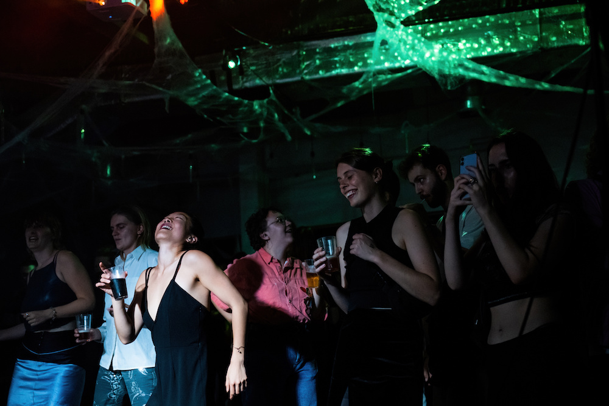
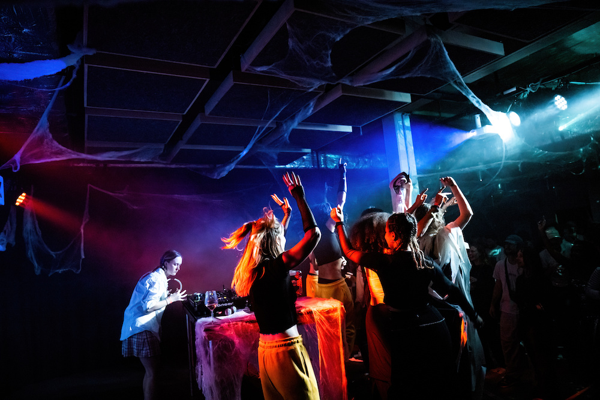
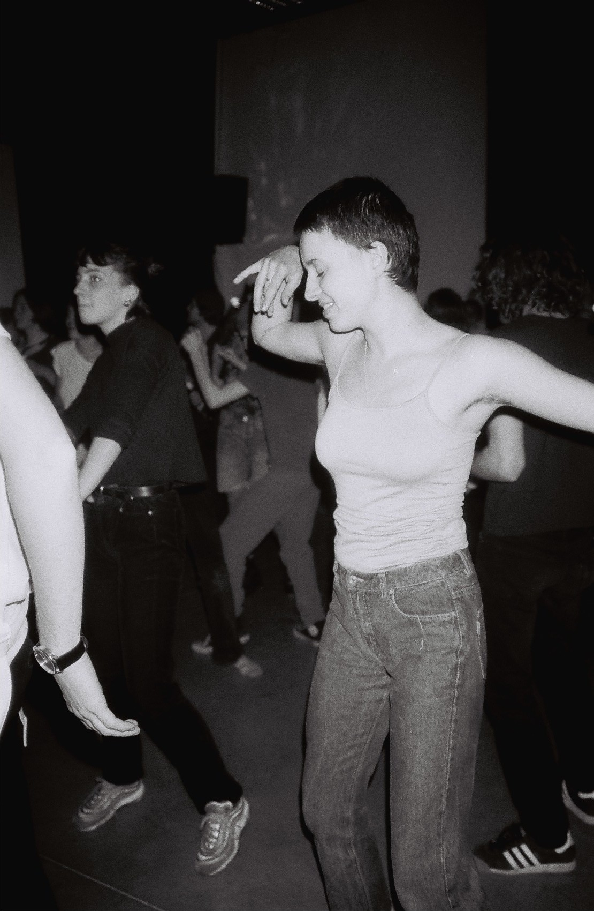
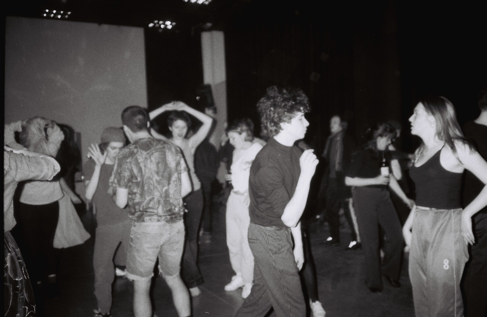

Clubbing at 7
Clubbing At 7 is a very short, very intense party bringing you the ecstasy and excitement of an entire night out in just a few hours. Clubbing At 7 takes place from 7PM till 10PM. At 10PM the lights go on and everyone can disappear into the night to find the next party (or the comfort of their own bed). Next Clubbing At 7 dates see upcoming.
Clubbing at 7 is organized by
Astrid De Haes, Aron Wouters & Finn Waters
Images
Stijn Verbruggen, Astrid De Haes